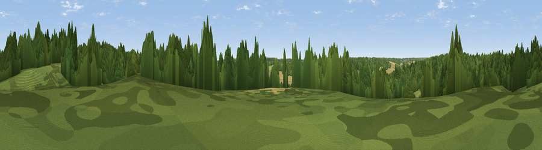

Viewpoint near Chesham Bois
#44304 in England · top 84% of its area beats it · near Chesham BoisThe view, rendered

A 360° render of this exact spot computed from the terrain model, tree cover and land cover — summer colours, afternoon light, calibrated against photographs of famous viewpoints. Real trees, hedges and buildings will differ in detail.
The panorama
Grey silhouette: terrain skyline in each direction (720 bearings, Earth curvature and refraction included). Dashed green: skyline with trees (+15 m) and buildings (+8 m) as obstacles. Blue strip: how far the ground is visible on each bearing.
Where the view opens
Wedge length = distance to the farthest visible ground on that bearing (vegetation-aware). Rings at 10, 25 and 50 km.
What fills the view
66% woodland · 20% grassland · 13% cropland · 1% built-up
Angular shares of the visible panorama (visual magnitude), not map area. Landscape diversity 0.40 (0–1 Shannon).
Key numbers
More beautiful places nearby
The staircase of upgrades: each row has a higher view potential than everything closer. Driving times are estimates from straight-line distance, calibrated against real road routing — check an actual route before setting out.
| Place | Direction | Drive | Score |
|---|---|---|---|
| Viewpoint near Chesham Bois | ENE · 2 km | ~6 min | 25.0 |
| Viewpoint near Coleshill | S · 3 km | ~7 min | 40.0 |
| Viewpoint near Loudwater | SSW · 8 km | ~16 min | 47.5 |
| Viewpoint near Downley | WSW · 11 km | ~20 min | 49.2 |
| Viewpoint near Tring | NNW · 11 km | ~21 min | 52.5 |
| Viewpoint near Wendover | NW · 11 km | ~22 min | 67.6 |
| Coombe Hill Monument | NW · 13 km | ~23 min | 75.5 |
| Beacon Hill | SW · 64 km | ~87 min | 76.7 |
51.67974, -0.62990 · source: screening · position refined by local search. Computed location — check access rights before visiting.